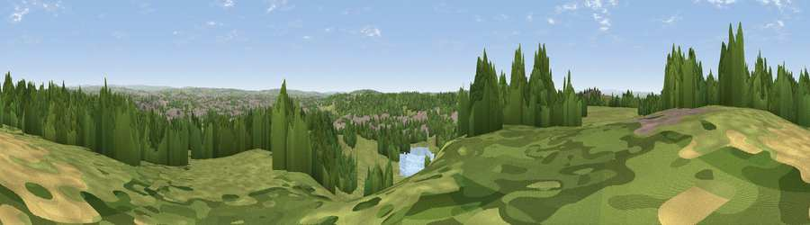

Black Bank
#17672 in England · top 23% of its area beats it · near SilverdaleThe view, rendered

A 360° render of this exact spot computed from the terrain model, tree cover and land cover — summer colours, afternoon light, calibrated against photographs of famous viewpoints. Real trees, hedges and buildings will differ in detail.
The panorama
Grey silhouette: terrain skyline in each direction (720 bearings, Earth curvature and refraction included). Dashed green: skyline with trees (+15 m) and buildings (+8 m) as obstacles. Blue strip: how far the ground is visible on each bearing.
Where the view opens
Wedge length = distance to the farthest visible ground on that bearing (vegetation-aware). Rings at 10, 25 and 50 km.
What fills the view
46% grassland · 36% woodland · 14% built-up · 2% cropland · 1% water
Angular shares of the visible panorama (visual magnitude), not map area. Landscape diversity 0.49 (0–1 Shannon).
Key numbers
More beautiful places nearby
The staircase of upgrades: each row has a higher view potential than everything closer. Driving times are estimates from straight-line distance, calibrated against real road routing — check an actual route before setting out.
| Place | Direction | Drive | Score |
|---|---|---|---|
| Alsagers Bank | NW · 1 km | ~4 min | 59.7 |
| Viewpoint near Madeley Heath | W · 2 km | ~4 min | 65.4 |
| Bignall Hill | N · 4 km | ~8 min | 75.2 |
| Viewpoint near Mow Cop | NNE · 11 km | ~20 min | 80.2 |
| Viewpoint near Harthill | WNW · 31 km | ~48 min | 80.5 |
| Viewpoint near Little Wenlock | SSW · 43 km | ~63 min | 84.2 |
| The Wrekin | SSW · 44 km | ~64 min | 85.0 |
| Viewpoint near Little Wenlock | SSW · 44 km | ~64 min | 86.6 |
53.02649, -2.27839 · source: osm peak · position refined by local search. Computed location — check access rights before visiting.